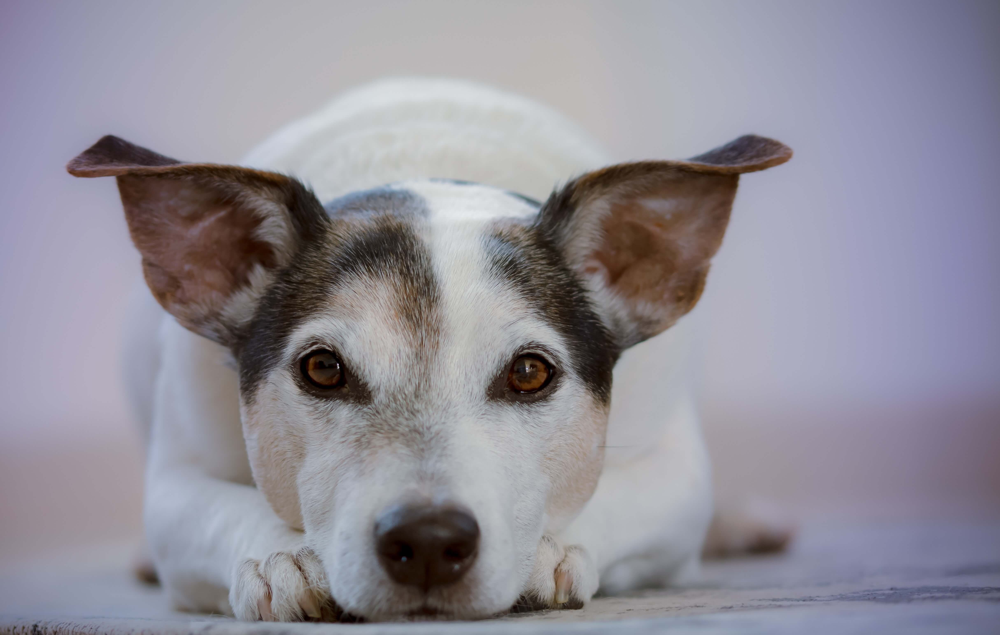
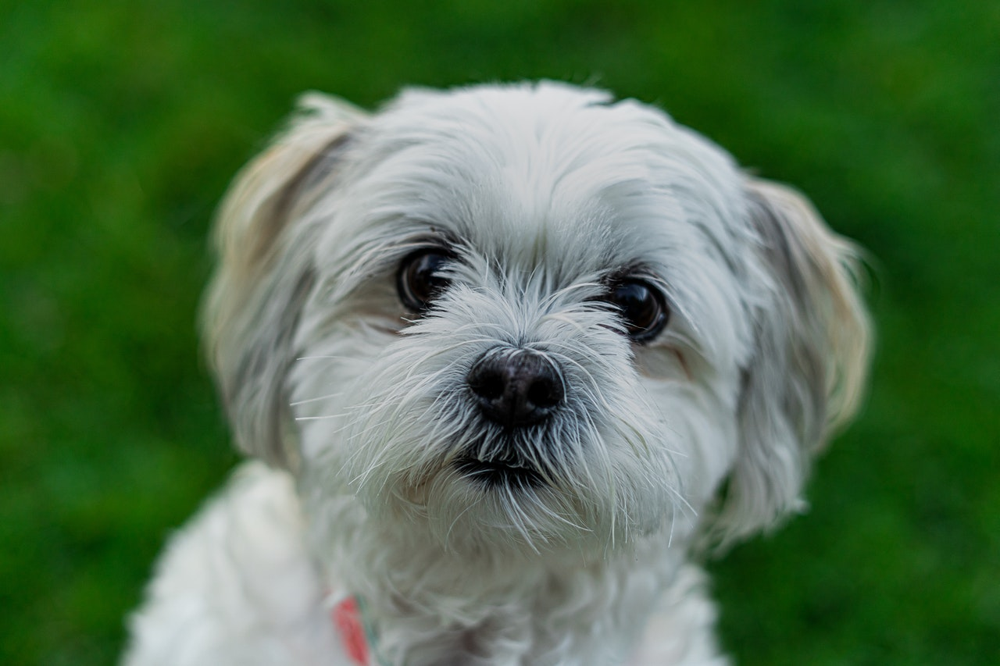

The first day
-
Take them outside. When you arrive home for the first time with your puppy, you
should take them straight
to your garden or outside space. Let them explore for a little while and go to the
toilet if they need to. If you have other pets, it is essential to have them greet here
too as it helps to avoid territorial disputes.
-
Introduce your puppy to their crate. If the breeder gave you a blanket or any toys,
put them in the crate to help your puppy identify it as their very own
safe space. These will smell of their previous home and their mother and siblings which will
help calm your puppy down.
-
Feed the puppy. Try to keep the meal times and food the consistent with their
schedule
with the breeder. This will help calm the puppy and ease them into their new way of
living.
-
Play with your puppy and give them lots of attention but remember that puppies need
lots
of rest and can sleep for up to 18 hours a day.
-
Praise them. Shower them with praise everytime they do anything good especially when
they go to the
toilet in the right place. They'll learn what's right and wrong in no time.
- Avoid walking them at first. It's highly likely that they will not have their
complete
set of jabs and so will need to see the vet first.
The first night
-
Choose a bed time and stick to it. Routine is what's going to help both you and your
puppy settle into a new life together.
-
Choose where they are going to sleep. Remember it will be distressing for the dog to
be
allowed to sleep on your bed for 3 months only for you to change your mind later.
-
Create a going to bed routine. This can involve doing a certain activity or giving a
certain type of food. A few slices of apple before bedtime can be a good indicator it is
time to sleep.
-
Spend the first night sleeping in the same room. It is likely your puppy will cry
for most of the night and you should be there to comfort and reassure them. Overtime you can
teach
them there is nothing to fear, but at the beginning a hard approach will only make them
feel more alone.
- Toilet breaks. Little puppies have little bladders and so will need to be taken out
in the night, often
multiple times. This will get better in time!
